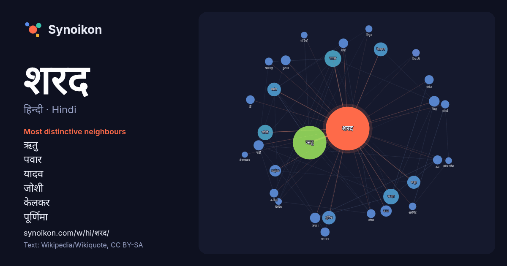

हिन्दी · Hindi · word of the day list
शरद
“autumn” · The words found around it in 606 instances from Hindi Wikipedia, Wikiquote.

Most distinctive neighbours
- ऋतु 145×
- पवार 43×
- यादव 35×
- जोशी 35×
- केलकर 30×
- पूर्णिमा 28×
- वसंत 27×
- कपूर 25×
- मल्होत्रा 21×
- बसंत 14×
- ग्रीष्म 12×
- कुमार 12×
- बोबडे 12×
- जनता 12×
- वर्षा 11×
- अरविंद 9.8×
- पार्टी 9.6×
- त्रिपाठी 9.6×
- सम्मान 9.3×
- महाराष्ट्र 9.0×
× = how many times more often than in general Hindi Wikipedia text.
Most frequent neighbours
- ऋतु 179
- पवार 44
- यादव 39
- जोशी 37
- केलकर 30
- पूर्णिमा 29
- वसंत 29
- कपूर 27
- मल्होत्रा 21
- काल 20
- सिंह 18
- जनता 17
- पार्टी 16
- कुमार 15
- भारतीय 15
- दौरान 14
- वर्षा 14
- दल 13
- बसंत 13
- भारत 13
In context
- शरद ऋतु, जिसे पतझड़ भी कहते हैं, चार शीतोष्ण ऋतुओं में से एक हैं। तुलसीदासजी ने रामचरितमानस में शरद ऋतु का गुणगान करते हुए लिखा है - बरषा बिगत सरद ऋतु Wikipedia snippets · शरद ऋतु
- शीत ऋतु वर्षा ऋतु की समाप्ति के पश्चात् शरद् ऋतु का आगमन होता है । पंचवटी में श्रीराम-लक्ष्मण से शरदागम का वर्णन करते हुए कहते हैं: वर्षा विगत सरद रितु Wikipedia snippets · शीत ऋतु
- मध्य शरद त्यौहार अथवा मून केक फेस्टिवल अथवा मध्य शरद उत्सव जिसे चीन में जूंचियो नाम से जाना जाता है, चीन और वियतनाम में फसल कटाई मनाया जाने वाला एक मूनकेक Wikipedia snippets · मध्य शरद त्योहार
- शरद अरविन्द बोबडे एक भारतीय न्यायाधीश तथा वर्तमान में भारत के मुख्य न्यायाधीश है। वे पूर्व में मध्य प्रदेश उच्च न्यायालय के मुख्य न्यायाधीश रह चुके है Wikipedia snippets · शरद अरविंद बोबडे
- शरद वेसावकर (नेपाली: शरद भेषावकर) (जन्म 9 अक्टूबर 1988) एक नेपाली क्रिकेटर हैं। वह दाएं हाथ के मध्य क्रम के बल्लेबाज हैं और दाएं हाथ के ऑफ ब्रेक गेंदबाज Wikipedia snippets · शरद वेसावकर
- शरद पवार महाराष्ट्र के प्रमुख नेताओं में से एक हैं । वे भारत के केन्द्रीय मंत्रिमंडल में रक्षामंत्री व कृषि मंत्री रहे हैं। वे महाराष्ट्र राज्य के 3 बार Wikipedia snippets · शरद पवार
- शरद पूर्णिमा, जिसे कोजागरी पूर्णिमा व रास पूर्णिमा भी कहते हैं; हिन्दू पंचांग के अनुसार आश्विन मास की पूर्णिमा को कहते हैं। ज्योतिष के अनुसार, पूरे वर्ष Wikipedia snippets · शरद पूर्णिमा
- 'शरद जोशी' (१९३१-१९९१) हिन्दी जगत के प्रमुख व्यंगकार शरद जोशी का जन्म मध्य प्रदेश के उज्जैन शहर में २१ मई १९३१ को हुआ। जीवन परिचय - कुछ समय तक यह सरकारी Wikipedia snippets · शरद जोशी
More Hindi words
- इतिहास
- ईश्वर
- कार्य
- कुत्ता
- गर्मी
- गाना
- घंटी
- घड़ी
- घोड़ा
- चाय
- चित्रकला
- छाया
- जंगल
- जलवायु
- जीवन
- तूफ़ान
- दर्पण
- द्वीप
- नक्षत्र
- नमक
- परिवार
- पहाड़
- पानी
- पैसा
- प्रकृति
- बगीचा
- बिल्ली
- भाषा
- भोजन
- माता
- मानचित्र
- मृत्यु
- मौन
- रेगिस्तान
- रेलगाड़ी
- रोटी
- वर्षा
- विज्ञान
- शक्ति
- शहद
- शहर
- सड़क
- सत्य
- समय
- सर्दी
- सेतु
- स्वर्ण
- स्वास्थ्य
- हृदय
Precomputed on 2026-10-09 with default settings (±5 words, medium corpus). The interactive map can refresh it with live data.